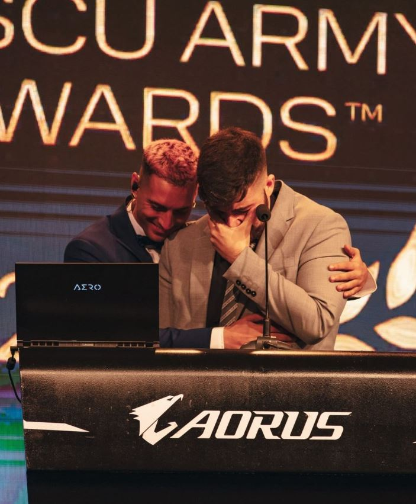
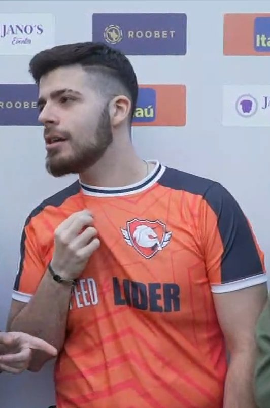
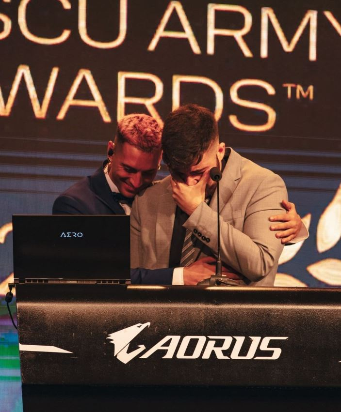
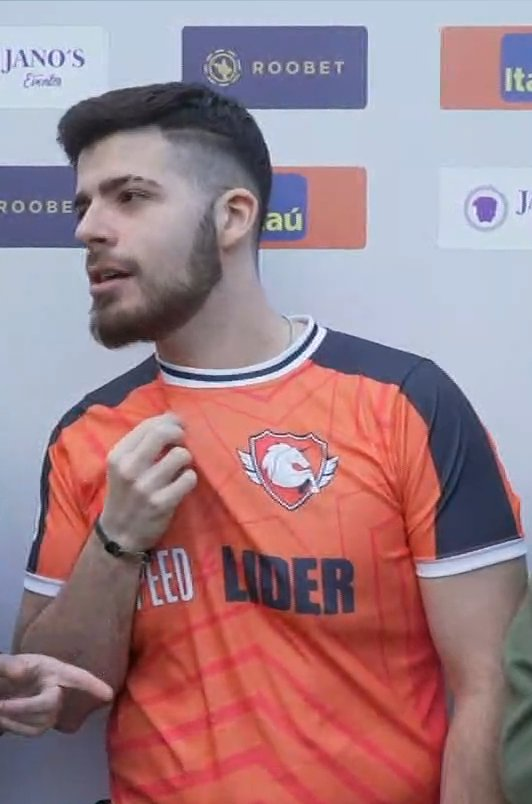

Mi nombre es Lautaro, algunos me dicen Lauta o Laucha. Nací en Buenos Aires, más precisamente en el barrio de Avellaneda. Crecí junto a mi hermano y mi madre, quienes me criaron y me enseñaron a recorrer la vida de la mejor forma. Mi padre también lo hizo, pero por poco tiempo, ya que a los 4 años nos abandonó y se fue a vivir a España.
Mi madre me mandó al colegio de Independiente, situado en Avellaneda, donde cursé mis estudios primarios y secundarios. A lo largo de los años escolares, desarrollé un gran vínculo con un deporte muy popular: el fútbol. Gracias a él, pude forjar una estrecha relación con mi abuelo, disfrutando mucho de las tardes de la Liga Argentina y de los aún más emocionantes días de la selección Argentina. También participé en competiciones escolares de fútbol y tuve la oportunidad de jugar un partido en el estadio de Independiente, donde marqué un gol, del cual presumiría por todos lados.
En mi adolescencia también comencé a usar la computadora e incursioné en el mundo de los videojuegos, en particular en el "League of Legends". Con el tiempo, alcancé un gran nivel en el juego, lo que me permitió conocer a mucha gente, algunos de los cuales se convirtieron en grandes amigos. Especialmente Fede, más conocido como "Zeko", quien me ayudó e impulsó en mi carrera como streamer.
 



| Nombre | Lautaro. |
|---|---|
| Apellido | Del Campo. |
| Apodos | Laucha, Lauta, Lancha, La Cobra, Nine, Cebra Lucho. |
| Posicion | Delantero |
| Dorsal | Nro 9. |
| Nacionalidad | Argentina, Buenos Aires, Avellaneda. |
| Trabajo actual | Streamer de vocación, futbolista por pasion. |
Comencé a hacer streaming en el 2019; en aquel año, dedicaba un poco de tiempo ya que, a la par, trabajaba y estudiaba. Empecé jugando videojuegos como League of Legends, y también jugaba a Counter Strike, pero de forma casual y no le dedicaba tanto tiempo.
Pasó el tiempo y llegó el año 2020, nadie sabía lo que este año me depararía. Comencé el año haciendo lo de siempre, con la particularidad de que, debido a la situación sanitaria global por el covid, pude hacer streaming más tiempo y crear más contenido con amigos. Me abrí a realizar algo más variado para descontracturarme de tanto videojuego, haciendo reacciones a videos polémicos y/o de actualidad, y hablando con el "chat" (las personas que miran al streamer).
Un día me pasé debatiendo sobre partidos y comparando jugadores, ya que me apasiona el fútbol. La gente respondió de manera positiva, manteniéndose atenta a la charla y dando sus puntos de vista. Con el tiempo, fui dándole otro rumbo al stream, enfocándome más en lo deportivo, mirando partidos históricos, reaccionando a jugadas inéditas, y discutiendo con la gente sobre diferentes temas. Llegando al fin de año, me enfoqué especialmente en los partidos que se jugaron en la liga Argentina.
Llegó el año 2021 en el que sucedieron muchas cosas que cambiaron mi forma de vivir y de tomar el streaming como un trabajo. La cantidad de personas que me veían aumentó considerablemente durante este año, y sin saberlo, estaba abriendo un nuevo camino en la generación de contenido, siendo uno de los streamers dedicados a hablar de deportes, más precisamente del fútbol.
También en este año se realizó la Copa América, un torneo que me generó demasiada alegría, ya que mi ídolo, Lionel Messi, logró su primer y tan ansiado título con la Selección Argentina. Además, en este año también tuve mi primer ban, por haber retransmitido un partido de baloncesto de los Juegos Olímpicos. También supe complementar análisis futbolísticos con humor, sobre todo humor, ya que este año no fue muy bueno para el club por el que soy hincha, Boca Juniors.
Para finalizar el año, gané un premio de plata en Los Coscu Army Awards como streamer alternativo.
En el año 2022, ya me posicioné como uno de los streamers más grandes de Argentina. Comencé el año compitiendo contra Davo en un mano a mano de "¿Cuánto sabes de fútbol?", una sección muy conocida del youtuber Ezzequiel. Creé muchas secciones de contenido muy variado, siendo la más popular los debates de clubes. Consistía en invitar seguidores de mi comunidad y generar un clima de discusión, como por ejemplo, "¿Qué club es más grande?" y debates de selecciones, donde invitaba a influencers de otros países con los que charlábamos sobre la actualidad de cada seleccionado, quién está mejor posicionado de cara al mundial y qué selección es más grande. Destacando a grandes personas como Mike de México, Angelo alias "Will" y Vincent de República Dominicana.
Por otro lado, fue un año difícil en el que tomé una decisión arriesgada: construir una habitación para reaccionar en vivo a los partidos del Mundial de Qatar durante ese mes y vivirlo a pleno. Realizar esto conllevaba un mal augurio si a la selección le iba mal, ya que vivo en un país en donde se popularizó la creencia de que puede haber gente con mala suerte o como le decimos acá "MUFAS".
Llegado el momento, ese 20 de noviembre de 2022, comenzó lo que yo no sabía que iba a ser la mejor etapa de mi carrera como streamer y de mi vida. A todo esto, me había llegado una invitación para competir en un mundial armado por un streamer Top de España llamado "TheGrefg", en el que quedamos eliminados en semifinales contra Francia. Durante el Mundial, la media de espectadores se mantuvo muy alta, llegué a ser uno de los top streamers de Latinoamérica.
Pude realizar entrevistas a los hinchas de diferentes países en Qatar gracias a un famoso amigo del canal, "Senen", y DataRef, quienes de forma desinteresada se ofrecieron a cubrir el ambiente que se vivía en el Mundial. Argentina fue campeona, y festejé primero con todos los del stream y luego fui al obelisco a seguir con la fiesta. Sin dudas, fue mi mejor año como streamer.
El 2023 lo recibí, organizando junto a mis moderadores un evento llamado "Los 8 Scalonis", el cual fue un éxito total y recibido con mucha positividad. Luego me fui de vacaciones con mi madre, una forma de devolverle todo el apoyo que me dio con los streams. Fui a República Dominicana y allí visité a dos grandes personas que forman parte de mi Stream, Will y Vincent.
Por otro lado, me fui volviendo cada vez más popular en el mundo del streaming, llegando a puntos como tener una charla con Kun Agüero en sus oficinas, o con Ibai por Discord. Asimismo, viajé a España y participé en el partidazo de Youtubers de DjMario en Valencia. También estuve en la Velada del Año, acompañando a un amigo que me ayudó mucho cuando era un streamer pequeño.
Hasta aquí, por ahora, llega mi biografía como persona pública... pronto aumentaré mi palmarés y mis logros. Gracias por leerme.